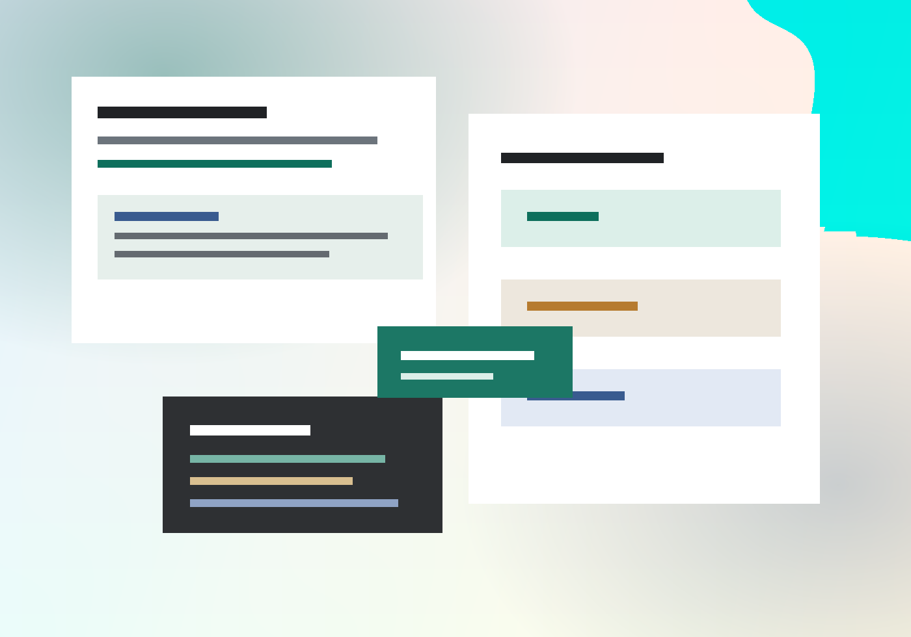

Current portfolio projects ready to link to GitHub repositories.
Software engineer
Satyam Gawali
I build focused tools that turn messy workflows into usable products, with a current emphasis on job-search automation, local-first data, and practical AI-assisted productivity.

Recent work emphasizes privacy-conscious storage, exports, and review flows.
Built for fast scanning: impact, stack, links, and contact details up front.
Selected work
Projects
Toolkit
Skills
Background
Experience
Contact
Let’s talk about the next role.
Replace the placeholder links with your real email, resume, LinkedIn, and GitHub URLs before publishing.